Independence Day
July 4, 2025
Playing with sparklers on Independence Day.
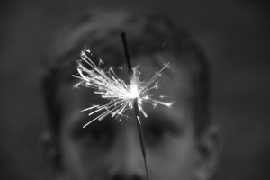
nature, street
View GallerySoftware • Stories • Still Frames
Playing with sparklers on Independence Day.

nature, street
View GalleryA photoshoot with exotic animals in Lansing, Michigan.
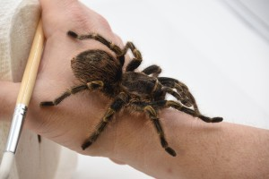
nature
View GalleryA return trip to the local horse farm in Leslie, Michigan.
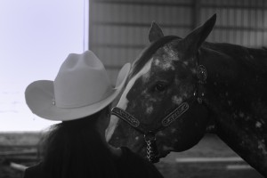
nature
View GalleryA trip to the Frederik Meijer Gardens in Grand Rapids, Michigan during butterfly season.
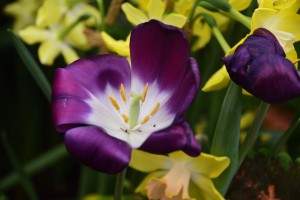
nature
View GalleryThe annual Sun Dried Music Festival in Mason, Michigan.
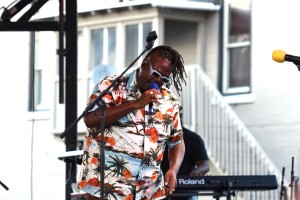
street
View GalleryA photo walk through town and the cemetary on Memorial Day in Mason, Michigan.
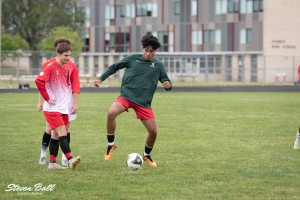
sports
View GalleryA photo walk through town and the cemetary on Memorial Day in Mason, Michigan.
street
View GalleryA visit to a local horse farm in Leslie, Michigan.
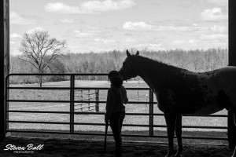
nature
View GalleryA visit to the Frederik Meijer Gardens in Grand Rapids, Michigan during butterfly season.
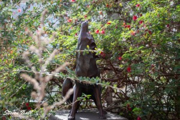
nature, scupture
View GalleryA photo walk around Old Town Lansing, Michigan.
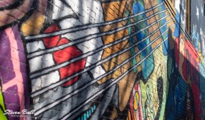
street
View GalleryA photo walk around downtown Lansing, Michigan.
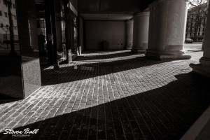
street
View GalleryTouring the Michigan State Capitol building in Lansing, Michigan.
architecture
View GalleryA photo walk through Kensington Metropark in Milford, Michigan.
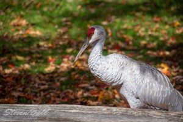
nature
View GalleryA Lansing Lugnuts minor league baseball game in Lansing, Michigan.
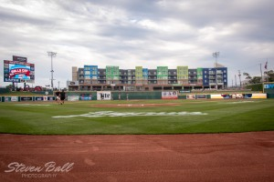
sports
View GalleryThe annual pride festival held in Lansing, Michigan.
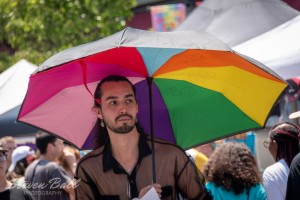
street
View GalleryA photo walk around Horrocks in Lansing, Michigan.
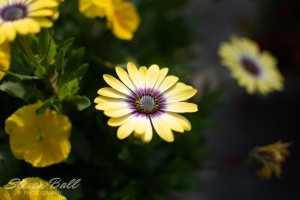
nature
View GalleryA Lansing Lugnuts minor league baseball game in Lansing, Michigan.
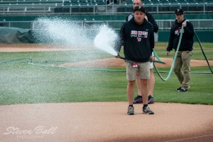
sports
View GalleryA photo walk around Michigan State University in East Lansing, Michigan.
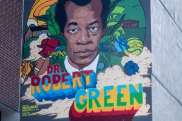
street, nature
View Galleryartificial intelligence, coding
ReadI am a professional software developer and the President of the Greater Lansing User Group for .NET Developers (aka GLUGNET). A graduate of Central Michigan University with a Bachelor of Science degree in Computer Science and Mathematics, I enjoy returning to campus to attend athletic events, notably football and basketball. When not working I enjoy doing photography and playing various musical instruments. I currently reside in the greater Lansing, Michigan area with my wife, our two sons, and our cats.